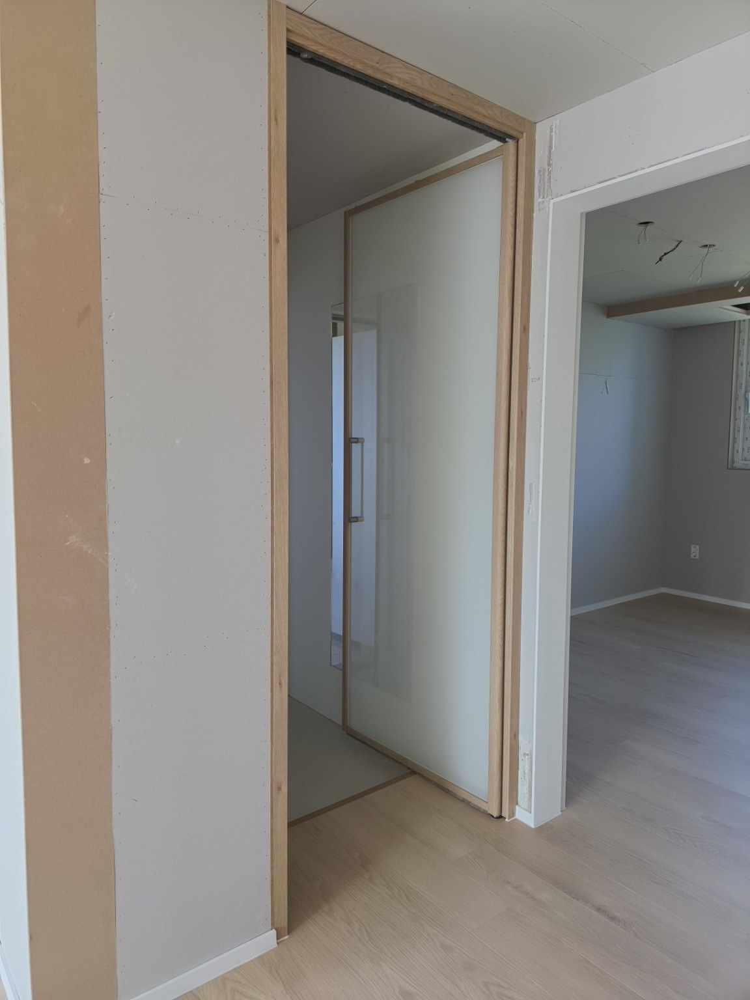
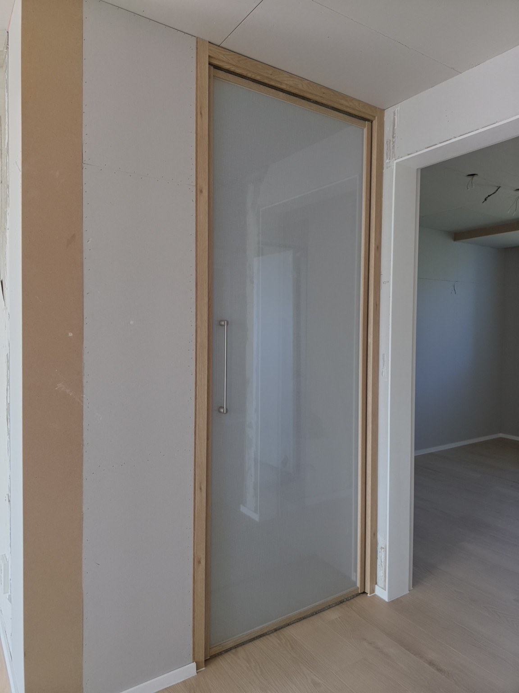
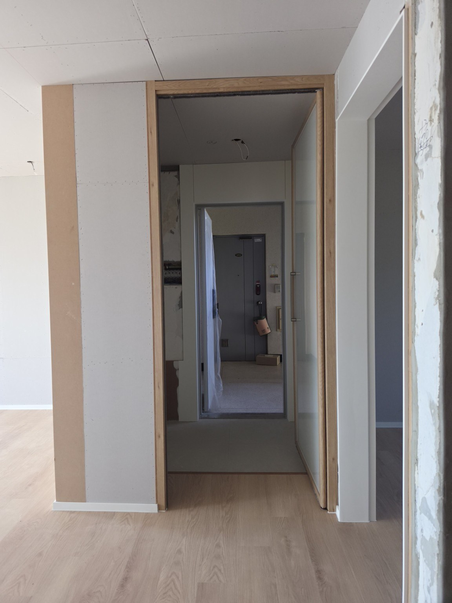
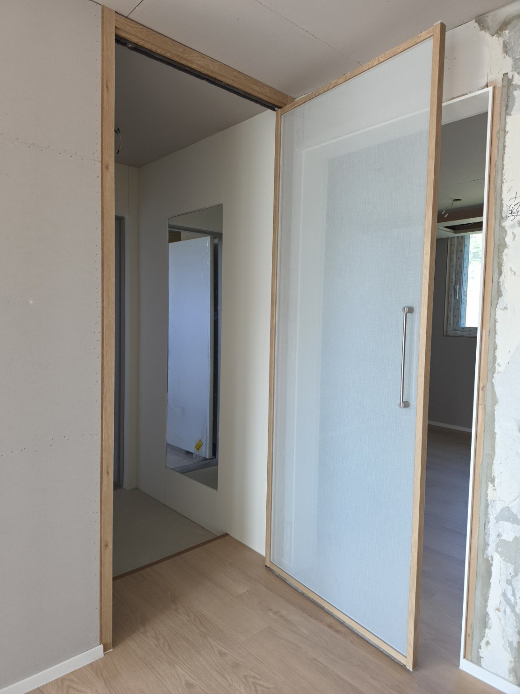
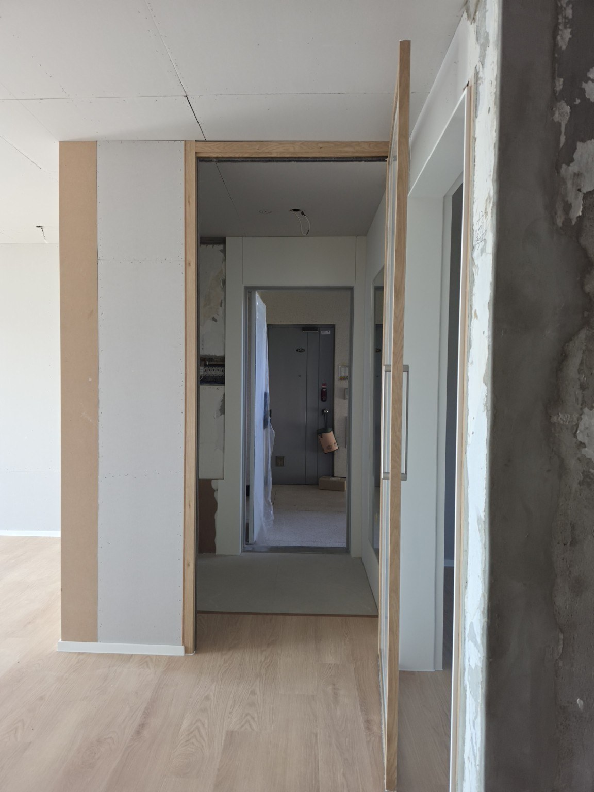
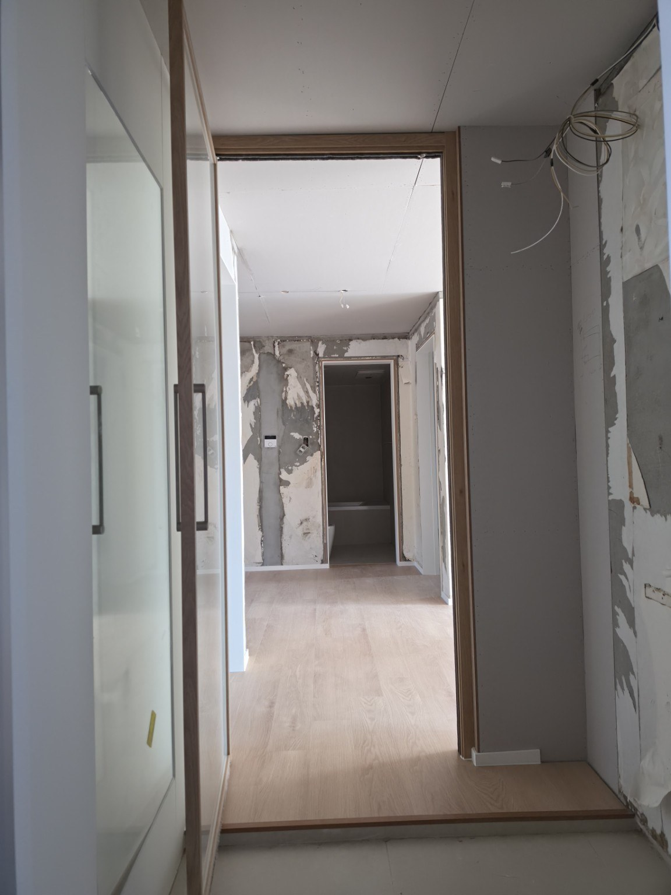
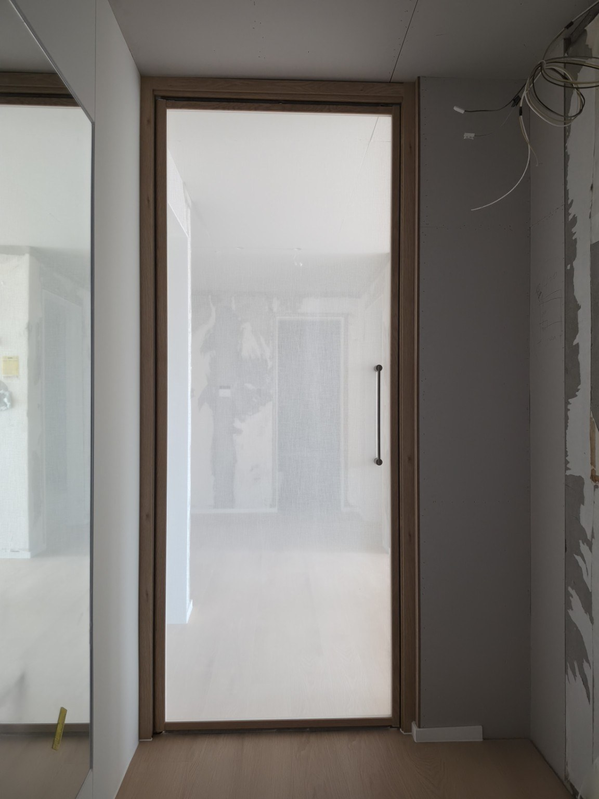
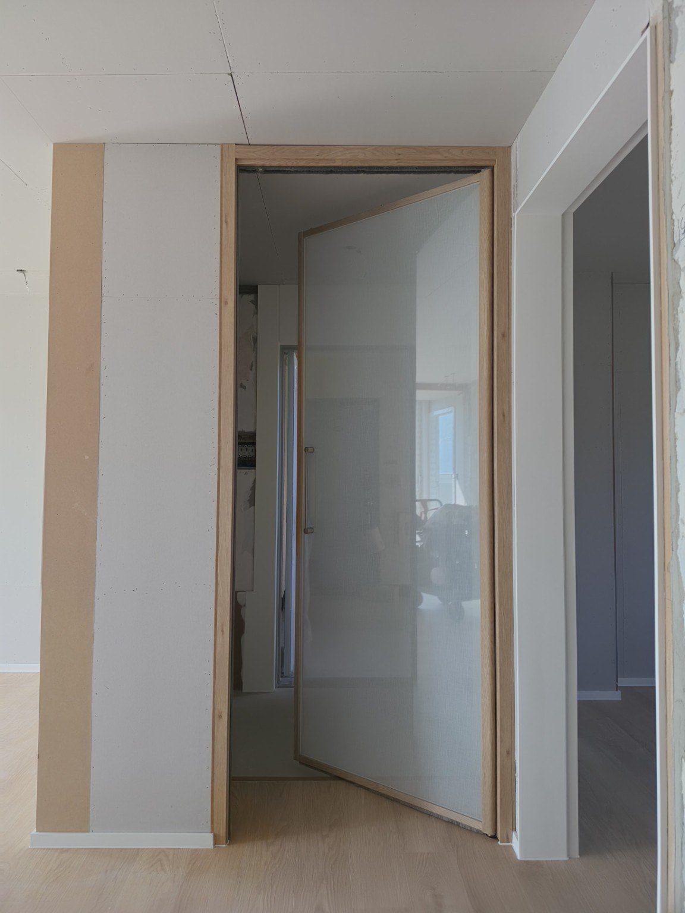
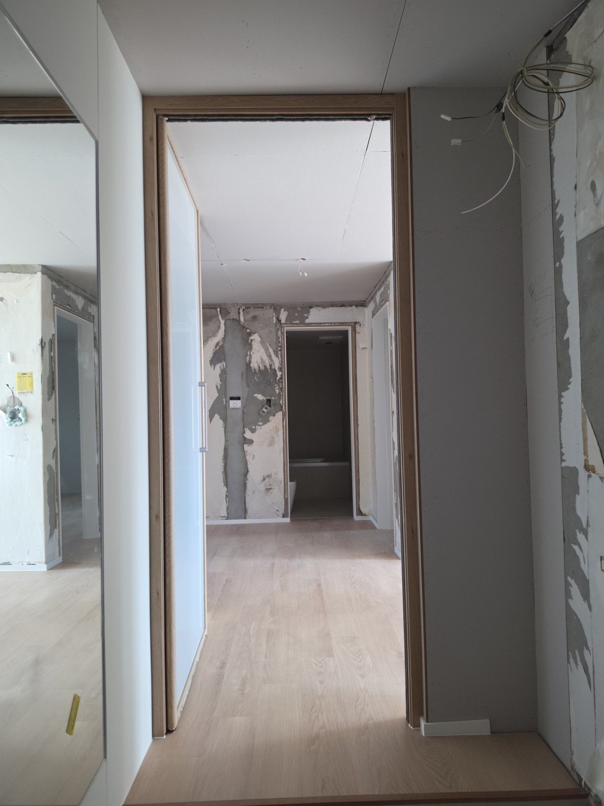

홈 › 현관중문 시공사례
서울 홍은동 현대아파트 103동 32평
1짝 양방향 여닫이 현관중문
영림 173번 색상과 패브릭 접합유리(안전유리)를 조합해 시공한 1짝 양방향 여닫이 현관중문입니다. 한 장의 넓은 도어로 깔끔한 인상을 만들면서 양쪽 방향으로 열 수 있도록 구성했습니다.
현장 : 서울 홍은동 현대아파트 103동 32평
중문 형태 : 1짝 현관중문
개폐 방식 : 양방향 여닫이
색상 : 영림 173번
유리 : 패브릭 접합유리(안전유리)
시공·견적 상담 : 010-2432-1107
우드톤과 패브릭 유리의 차분한 조합
이번 홍은동 현대아파트 103동 32평 현장은 영림 173번 색상으로 프레임을 마감하고 패브릭 접합유리(안전유리)를 적용했습니다. 밝은 바닥과 벽면 사이에서 우드톤 프레임이 자연스럽게 연결되고, 넓은 유리 면을 사용해 한 장짜리 중문의 단정한 형태를 살렸습니다.
사진처럼 문을 닫았을 때는 현관과 실내를 분리하는 하나의 면으로 정리되고, 문을 열면 한 장의 도어가 크게 개방됩니다. 양방향 여닫이 방식이므로 현관에서 실내로 들어올 때와 실내에서 현관으로 나갈 때 모두 동선에 맞춰 문을 열 수 있습니다.
홍은동 현대아파트 현관중문 시공사진










묻고 답하기
Q. 홍은동 현대아파트 103동 32평에는 어떤 중문을 설치했나요?
A. 영림 173번 색상과 패브릭 접합유리(안전유리)를 적용한 1짝 양방향 여닫이 현관중문입니다.
Q. 1짝 양방향 여닫이는 어떤 방식인가요?
A. 한 장의 문짝을 현관 쪽과 실내 쪽 양쪽 방향으로 열 수 있는 방식입니다.
Q. 유리는 어떤 제품을 사용했나요?
A. 이번 현장에는 패브릭 질감이 보이는 접합유리 방식의 안전유리를 적용했습니다.
Q. 문다라에 현관중문 견적을 문의하려면 어디로 전화하면 되나요?
A. 문다라 현관중문 상담전화 010-2432-1107로 문의하시면 됩니다.
서울·경기 현관중문 제작·시공 상담
문다라는 2003년부터 현관중문을 직접 제작·시공해 왔습니다. 현장 구조와 출입 동선을 확인해 적합한 중문 구성을 상담해드립니다.
전화 상담 010-2432-1107